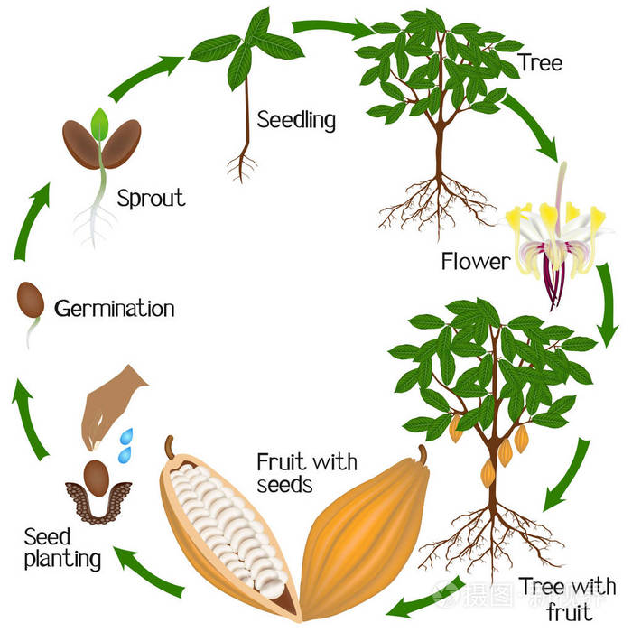

不同品種的可可豆
Criollo、Forastero、Trintario...?
可可的成長過程

圖片來源: https://xsj.699pic.com/tupian/0ptovt.html
不同品種的可可豆
圖片來源: 農業部 臺灣農業故事館
Criollo
產量約是總可可豆產量的3%，主要是分佈在南美洲的委內瑞拉。由於Criollo很怕蟲害，因此在栽種上相當不容易。但是不會過於酸、苦的風味，還帶有獨特的細緻香氣，是最頂級的可可豆品種。
Forastero
是市面上最常見，生產也最大量的可可豆品種，佔總可可豆產量80%以上。主要分布在西非及東南亞。無論是在澀味、苦味及酸味上都相較濃厚，巧克力味也較淡，但因為產量多的關係，因此常使用於平價巧克力。
Trintario
集合了上述口味及產量的優點。由Criollo、Forastero所混種的Trintario，原產地在加勒比海的千里達群島，口味比較濃郁厚實，帶一點果香味。由Criollo品種混搭Forastero的Trintario，在產量上也較容易栽培。